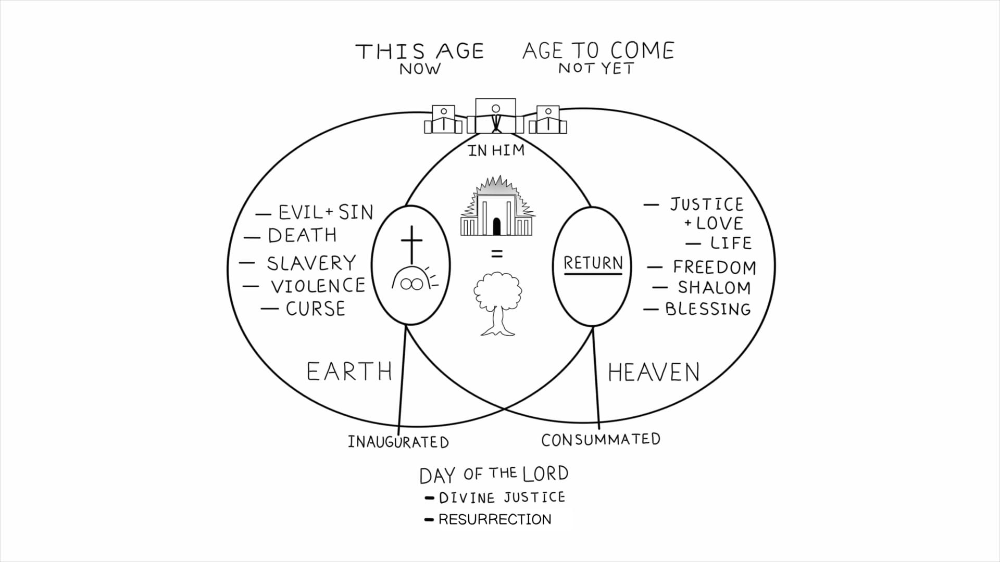

Sessão 21: Imagens de Jardim e Templo para o Povo de DeusSession 21: Garden and Temple Imagery for God’s People
Principais LiçõesKey Takeaways
- A nova humanidade é uma assembleia de pessoas que agora são a expressão física do próprio Jesus.The new humanity is an assembly of people who are now the physical expression of Jesus himself.
- Paulo usa metáforas de templo e jardim para descrever como a nova humanidade enche o mundo com a presença de Jesus.Paul uses the metaphors of a temple and a garden to describe the way that the new humanity fills the world with Jesus’ presence.
Templos e ÁrvoresTemples and Trees
Paulo descreve a nova comunidade de seguidores de Jesus com uma mistura de metáforas de templo, árvore e corpo. Todas elas apontam para a realidade de que Jesus é o lugar onde a plenitude de Deus vem se sobrepor à Terra. E a nova humanidade participa dessa plenitude em Jesus.Paul describes the new community of Jesus followers with a mixture of temple, tree, and body metaphors. All of these are pointing to the reality that Jesus is the place where the fullness of God comes to overlap with Earth. And the new humanity participates in this fullness in Jesus.

Pergunta de ReflexãoReflection Question
Qual é o significado de a nova humanidade ser chamada de templo de Deus?What is the significance of the new humanity being called God’s temple?
Esta sessão não tem outras notas.This session has no other notes
Módulo 8: Tudo é Sobre AmorModule 8: It's All About Love
Sessões 22-23SESSIONS 22-23
Como Paulo conclui e resume os temas de Efésios 1-3? Comece para descobrir!How does Paul wrap up and summarize the themes of Ephesians 1-3? Get started to find out!